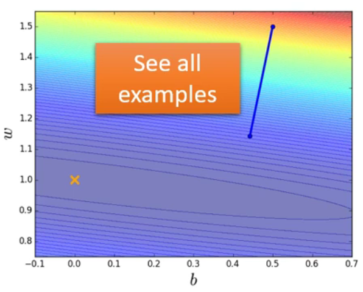
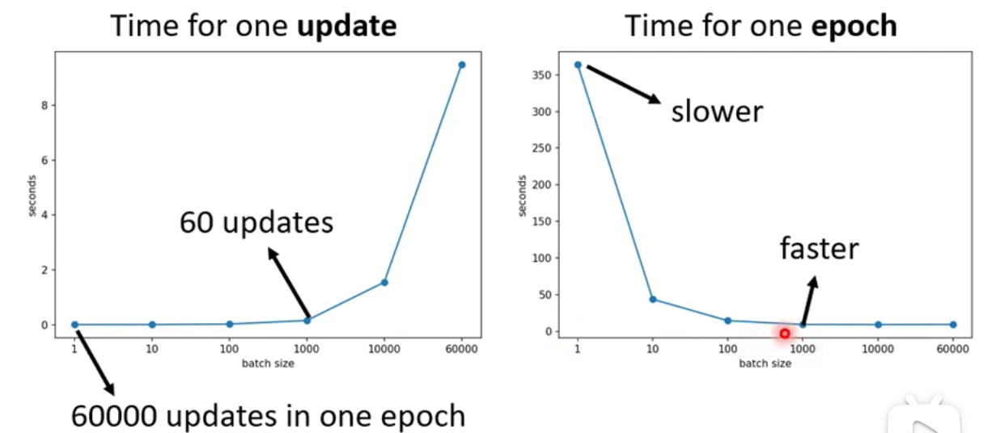
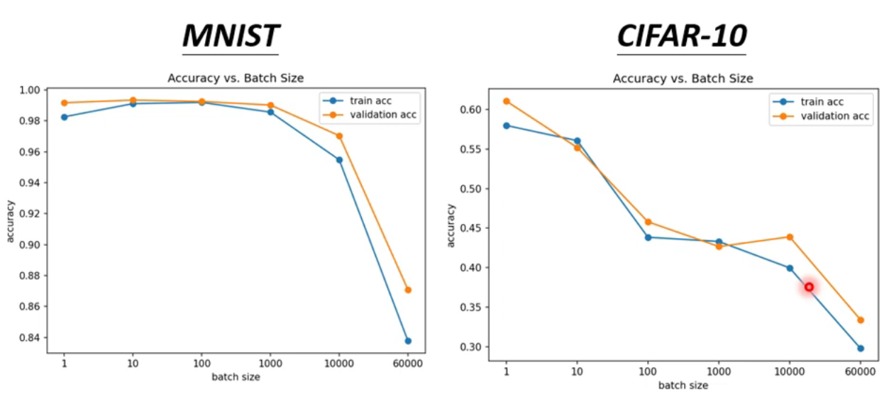
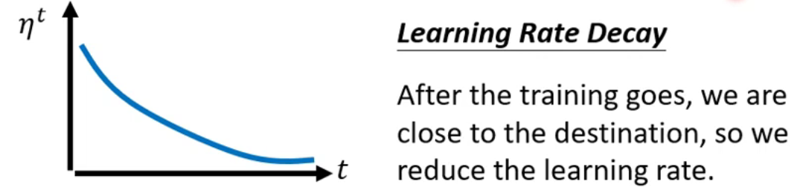
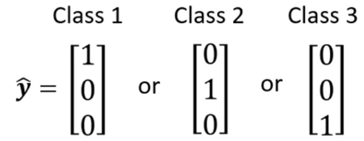
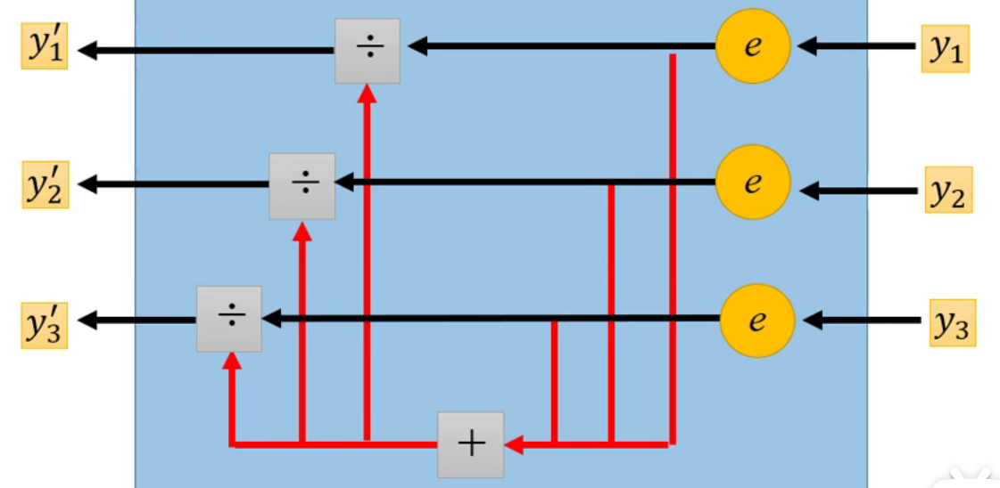

TASK05 - Traning Tips

P5 Local minima vs Saddle point
by Hung-yi Lee - Machine Learning 2021 - P5 局部最小与鞍点
1. Terminology of local minima & saddle point
Optimization fails ↓

Scenarios
1. Blue：当到达某个时刻，参数update对loss没有变化，但loss并不小；
2. Orange：从刚一开始，gradient就没有变化，gradient为0
即 对Loss的微分为0，gradient descent无法update参数。 可能的原因：
1. local minima
2. saddle point（鞍点）→ 既不是local minima, 又不是local maxima

- gradient = 0的点 统称为
critical point
2. 如何判断local minima还是saddle point？
- Task03中的泰勒展开式，增加二次微分项
- θ = θ’ 附近的 L(θ) 可展开为：
L(θ) ≈ L(θ’) + ( θ - θ’ )T g + 1/2 ( θ - θ’ )T H ( θ - θ’ )
- 一次微分 Gradient g is a vector：gi = 𝜕 L(θ’)/ 𝜕 θi
- 二次微分 Hessian H is a matrix：Hij = 𝜕 2L(θ’)/ 𝜕 θi𝜕 θj
- 和
critical point有什么关系？- 一次微分在
critical point时为零 - 二次微分则可用于判别
critical point的特性（他的地貌长什么样子）
- 一次微分在
- Hessian H：simplified 1/2 ( θ - θ’ )T H ( θ - θ’ )* → vT H v
- For all
v: vT H v >0 → θ’ 附近 L(θ) > L(θ’) → Local minima - For all
v: vT H v <0 → θ’ 附近 L(θ) < L(θ’) → Local maxima - Sometimes vT H v >0, sometimes vT H v <0 → Saddle point
- vT H v >0 相当于
His positive definite = All eigen values are positive，即直接看H的eigenvalue为正就可以判断local minima；同理eigenvalue全负时，为local maxima；有正有负时，为saddle point。
- For all
Saddle point时怎么继续做gradient descent：- 以下方法不常在实际中运行：
- 求
H的特征向量u及特征值λ → vT Hv 中v用u代替 → uT H u = uT λ u = λ ||u||2 - 若 λ < 0 时，λ ||u||2 < 0 → L(θ) < L(θ‘) 即 local maxima的情况
- 换句话说 只要沿着eigenvector u 的方向去更新参数，L 就会减小
- 但由于计算量过大，这种方法不实用。但是是一种可能性，实在碰到saddle point最差的情况下也能用这种方式。
- 求
- 以下方法不常在实际中运行：
- θ = θ’ 附近的 L(θ) 可展开为：
P6 Batch vs Momentum
by Hung-yi Lee - Machine Learning 2021 - P6 批次与动量
1. BATCH
Terminology
- batch
- Batch也有人称之为mini batch
- 实际上算微分的时候，把所有data分成一个个的batch
- 每一笔batch资料里算gradient，再update参数
- 意思是不会把所有的data同时算loss，而是按batch来
- epoch
- 把所有的batch看过一遍，称之为一个epoch
- 每一个epoch的batch都不一样
- shuffle：每次更新epoch时batch都不一样，叫做shuffle
- batch
Batch size: Small Batch v.s. Large Batch
example 1:无平行运算，batch size的不同结果
| Batch size | = N (full batch) | = 1 |
|---|---|---|
| Gradient Descent |
upddate after seeing all the examples 在一个epoch里只update一次  |
update for each example 在一个epoch 里面会update 20次  |
| Pros | 时间长 | 时间短 |
| Cons | 稳当 powerful | 较noisy |
Q1: 但如果加入平行运算呢？(by GPU)
example 2:平行计算，larger batch size会更好- Larger batch size 并不一定会需要更长的时间算gradient；但有上限。
从batch size 1到1000时，平行运算导致时间差不多；
但10000甚至60000时，运行时间就开始指数型增长。
- Smaller batch size 对于一个 epoch 要求更多时间更新
左边为 一次update，右边为 一个epoch 所用时间。
- 也就是考虑batch size时，考虑单次update时间 及 单次epoch的update时间
- Larger batch size 并不一定会需要更长的时间算gradient；但有上限。
Q2: 但是不是larger size的batch就是好的呢？
并不是！
在实际training中，同样的model、同样的network，照理说表示的accuracy结果应是一摸一样， 但：
example 3：平行计算，small size的准确度会更高
随着size增大，准确度下降（此例 与overfitting无关）
Q3: 为什么batch size会和准确度相关呢？
对比不同size时，gradient在larger size可能会被卡住；而在smaller size上会同时进行不同loss的计算，这种noisy update是有助于找到更低的loss

Summarizing batch size：
| Large | Small | |
|---|---|---|
| Speed for 1 update (no parallel) |
Slower | Faster |
| Speed for 1 update (with parallel) |
Same (with limitation) |
Same |
| Speed for 1 epoch | Faster ★ | Slower |
| Gradient | Stable | Noisy |
| Optimization | Worse | Better ★ |
| Generalization | Worse | Better ★ |
2. MOMENTUM
物理世界里面有惯性，使得球体在动量惯性继续向前动。那在gradient descent中，即是 前一步的weighted gradient减去现在的gradient。
mi = weighted sum of all the previous gradient g0, g1, g2, …
所以：
m0 = 0
m1 = λm0 - η g0 = - η g0
m2 = λm1 - η g1 = -λ η g0 - η g1
…

这样就有可能在local minima的时候，再尝试往前走并突破。
P7 Learning Rate
by Hung-yi Lee - Machine Learning 2021 - P7 自动调整learning rate
Adagrad
RMSProp
(没有论文) 和 Adagrad 中 Root Mean Square 唯一的不同是 RMSProp 没有取 MEAN值，而是考虑不同的权重调整式子中 α 值。

Optimization strategy a.k.a OPTIMIZER: Adam = RMSProp + Momemtum 是较为常用的 optimizer

Learning Rate Scheduling
Learning Rate Decay

Warm Up

有很多高级算法都“偷偷”加上了warm up却未告知它的作用、它的来由。
A possible explaination: 统计学上讲，需要多笔数据后才能得到更精准的数据；warm up的作用便是使得数据先被“预读”过、探索过一些error surface的情报。
ref: RAdam
Summary of optimization
(Vanilla) Gradient Descent: θt+1 ← θt - η gt
Various Improvement: θt+1 ← θt - ηt/σt mt
- （考虑方向）mt = momentum: weighted sum of the previous gradients
- （考虑大小）σt = root mean square of the gradients
- （考虑schedule）ηt
P8 Optimization by loss function
by Hung-yi Lee - Machine Learning 2021 - P8 损失函数也可能有影响
下方以Classification为例：
Classification
假如分三类：Class 1, Class 2, Class 3
Class as one-hot vector

Classification operation
input x → W’ * σ ( b + W · x) + b’ = output y → y' → y^
其中 y 可为任何值；y'为 y 通过softmax function转换成的值，为0到1之间；y^为 y' 目标label，通过MSE或Cross-entropy判断
1. softmax（当 binary的时候用sigmoid）
yi‘ = exp(yi) / Σjexp(yi)
- 1 > y’ > 0
- Σy’ = 1
其过程为 1. 求指数 → 变正数 2.求总和的分数 → 算比例

2. Cross-entropy
e = - Σ yi^ ln y’i
Minimizing cross-entropy = Maximizing likelihood。Cross-entropy 比 MSE 更常用，在PyTorch里面甚至把softmax和Cross-entropy放一起了。
Q：那为什么Cross-entropy就好了呢？

MSE容易将loss卡在large loss的部分，而Cross-entropy则不会。这也说明了loss function可以改变optimization。
P9 Batch Normalization
by Hung-yi Lee - Machine Learning 2021 - P9 批次标准化